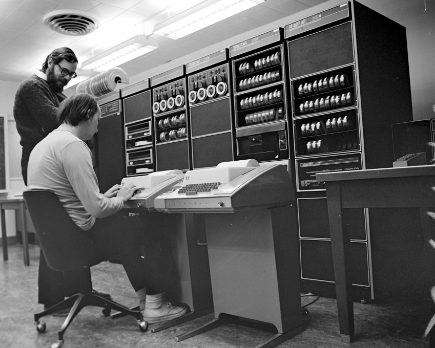

"Para entender o presente é preciso conhecer o passado" - Carl Sagan
Esse post é de minha autoria e foi publicado primeiro no blog da Concrete Solutions: http://blog.concretesolutions.com.br/2013/07/um-pouco-sobre-linux-e-um-pouco-de-historia/
Nota: Coloquei os links que referenciam a Wikipédia apontando para os artigos em Inglês, você sempre pode procurar o link para a versão em Português na barra na lateral esquerda.
Para entender o que é o Linux e o porque dele ser como é, é preciso saber como ele surgiu.
Tudo começou quando a Bell Labs abandonou o projeto Multics, que visava desenvolver um sistema que fornecesse poder computacional num modelo semelhante ao que temos para energia elétrica, ou o de telefone fixa (Utility computing). Há uma frase erroneamente atribuída a Thomas Watson (nome do IBM Watson é uma homenagem a ele), "I think there is a world market for maybe five computers" ("eu acredito que no mundo haja um mercado para cinco computadores"), mas que parece não ser tão absurda com o aumento do uso de app e dispositivos móveis, que podem se interpretados como uma reencarnação dos Thin Clients e terminais, e Cloud Computing.
Ken Thompson e Dennis Ritchie (que faleceu em outubro de 2011) resolveram criar uma versão simplificada do Multics numa máquina que estava sem uso. Pegando emprestado alguns conceitos do Multics eles escreveram na linguagem de máquina do minicomputador PDP-7 o que viria a ser chamado de Unix. Nessa primeira versão do Unix, ainda no PDP-7 foi criada a linguagem B, e uma parte do Unix foi reescrita em B, o que o tornou portátil, já que sem esse passo seria preciso reescrever o sistema inteiro na linguagem de máquina da plataforma alvo. C (ver K&R) só foi surgir quando o Unix foi portado para o PDP-11, uma máquina mais potente que precisou que a linguagem mudasse. Mais tarde o Unix foi reescrito em C.

Ken Thompson e Dennis Ritchie planejando dominar o mundo com o seu PDP-11
Nesses primeiros dias, os fontes do sistema eram distribuídos gratuitamente já que o valor na industria de TI da época era o hardware, a universidades e era estudados amplamente e usado em pesquisas. Em Berkeley foi criada a primeira distribuição baseada no código do Unix, chamada de Berkeley Software Distribution ou BSD, que mais tarde viria ser a base do Darwin (o Unix da Apple), por tanto ao OSX e iOS. Mas essa já é outra história.
Do outro lado do atlântico algum tempo depois, um professor chamado Andrew Tanenbaum resolveu criar uma mini-versão do Unix para o IBM PC, chamada MINIX. O código cabia inteiro no livro que ele havia escrito sobre sistemas operacionais. Mais tarde Tanenbaum lideraria o desenvolvimento do sistema operacional distribuído Amoeba, onde Guido van Rossum viria sentir a necessidade de criar Python.
De volta a terra do Tio Sam, Richard Stallman estava com problemas com uma impressora Xerox (Um dia escrevo uma artigo sobre a Xerox e o PARC), e se ofereceu para corrigir o bug que o incomodava, o que lhe parecia razoável, já que ele fazia parte do laboratório de inteligência artificial do MIT. Só que para isso, o fabricante da impressora pediu que ele assinasse um NDA (Non Disclosure Agreement ou Acordo de não divulgação). Para ele que respirava a cultura Hacker, era impensável não poder compartilhar as melhorias que ele fizesse com os outros hackers. Então o nosso amigo resolveu que ninguém nunca iria precisar assinar um NDA para poder modificar um software para adapta-lo para seu uso, e iniciou o projeto GNU. O Projeto GNU (http://gnu.org) visava criar um sistema operacional altamente portátil chamdo Emacs, digo, o Sistema Operacional GNU chamado GNU/Hurd, que é uma reimplementação livre de todos os componentes de um sistema Unix.
Richard Stallman começou sozinho escreveu o Emacs (um editor de texto poderoso, implementado e extensível num dialeto LISP chamado Elisp). Mais tarde pediu a Andrew Tanenbaum (o cara do MINIX), se ele poderia usar o Amsterdam Compiler Kit que ele havia escrito como o compilador do projeto GNU, mas Andrew disse que o compilador não era livre, então Stallman resolveu escrever o GCC (um compilador que se baseia em front-ends e back-ends para compilar inúmeras linguagens para inúmeras plataformas). Mais tarde outros começaram a se juntar a ele na tarefa de reescrever cada um dos programas que compõem um sistema Unix. O software produzido pelo projeto GNU é altamente portátil, foi, e é usado em uma grande variedades de sistemas Unix, devido a uma série de fatores, sedo o principal a possibilidade de modificar o código das aplicações. Só que no fim, ainda faltava um programa a ser substituído, o kernel. Era possível substituir todos os softwares proprietários de um sistema Unix por suas cópias equivalentes GNU, mas o substituto GNU para esse programa (o Hurd (Hird of Unix-Replacing Daemons)), que existe para gerenciar a máquina e os outros programas, ainda não estava pronto (e segue não sendo recomendado para sistemas em produção). Não era possível considerar o sistema livre sem um kernel livre. E é ai que entra na nossa história um tal de Linus Torvalds.
O Sistema Operacional GNU...
Um estudante Finlandês chamado Linus Torvalds comprou um IBM PC e instalou o MINIX nele, mas não foi muito com a cara do kernel (mais exatamente, [micro-kernel][]) MINIX (e mais tarde com a o do criador dele) e achou que podia fazer melhor. Esse kernel melhor escrito por Linus, que ele chamou de Linux, foi aunuciado ao mundo e recebeu muitas contribuições (pull requests, para que vocês jovens possam entender). Algumas pessoas começaram a montar sistemas que juntavam esse kernel a os programas GNU e chamaram isso de distro Linux, o que deixou Richard Stallman muito #chateado, e até hoje ele tenta catequizar o mundo e pregar a palavra do GNU/Linux (GNU-slash-Linux), com algum sucesso.
Espero que essa estorinha possa ter gerado interesse na história da computação, do Unix, do projeto GNU, do movimento OpenSource e um pouco na filosofia Hacker também.
Bónus
Timeline das distros Linux (ou GNU/Linux): http://upload.wikimedia.org/wikipedia/commons/1/1b/Linux_Distribution_Timeline.svg
Veja o canal do Youtube do Computer History museum: http://www.youtube.com/user/ComputerHistory/videos
Dessa tradição Bell Labs / Unix / C surgiram ainda
-
Plan 9: Um sistema operacional que teve o seu código aberto. Desenvolvido pela Bell Labs como sucessor do Unix, onde tudo é representado como um sistema de arquivos. Interessante notar que até mesmo os processos são representados como um sistema de arquivos, essa idéia foi copiada do Unix V8, e depois copiada pelo Linux e outros Unix e Unix-Like na forma da árvore /proc (recomendo rodar "ls /proc", só pela diversão) . Ainda, UTF-8 foi criada por Ken Thompson e Rob Pike e teve a sua primeira implementação no Plan 9.
-
9front: Um fork do Plan 9
-
Inferno: Sistema operacional também pela Bell Labs, fruto das experiências com o desenvolvimento do Plan 9. Escrito em C e Limbo, altamente portátil, roda numa máquina virtual register-based, que inspirou a VM Dalvik, usada no Android (que usa o Linux como seu Kernel). Agora, propriedade na Vita Nuova. É possível rodar ele como hóspede no Linux, Windows, Internet Explorer, OSX (Darwin), Plan 9, nativo em alguns hardwares, FreeBSD, Solaris, etc
-
Go lang: Linguagem desenvolvida por Ken Thompson (um dos inventorer do Unix, obviamente trabalhou no Plan 9), Rob Pike (trabalhou no Plan 9) entre outros, e mais tarde teve ajuda do Russ Cox (também trabalhou no Plan 9), que elevou o nível das bibliotecas padrão. Começou com o objetivo de substituir C++ dentro do Google, reduzindo o tempo de compilação que chega a levar horas para algumas aplicações e melhorar o entendimento da interdepêndencia entre aplicações e bibliotecas, com um pouco da flexibilidade de Python (ambas, C++ e Python são amplamente usadas dentro do Google). Inspirada por C, Python, Limbo, CSP, Pascal, Oberon, Modula e Newsqueak. Não tava sabendo, mas o Grok Podcast começou uma série esses dias sobre Go http://www.grokpodcast.com/2013/07/17/episodio-95-golang/
Recomendo uma pesquisa sobre a origem dos transistores e outras contribuições do grupo de R&D "fundado" por Alexander Graham Bell, inventor do Telephone.
Sistemas operacionais que usam o kernel Hurd
-
Debian/Hurd ou Debian/GNU/Hurd: O Sistema operacional Debian (ou GNU/Debian) usando o kernel GNU ao invés do Linux
-
Arch/Hurd: Sistema operacional Arch + o kernel GNU substituindo o Linux
-
GNU/Hurd: O Sistema operacional GNU. Totalmente livre e GNU.
There are comments.